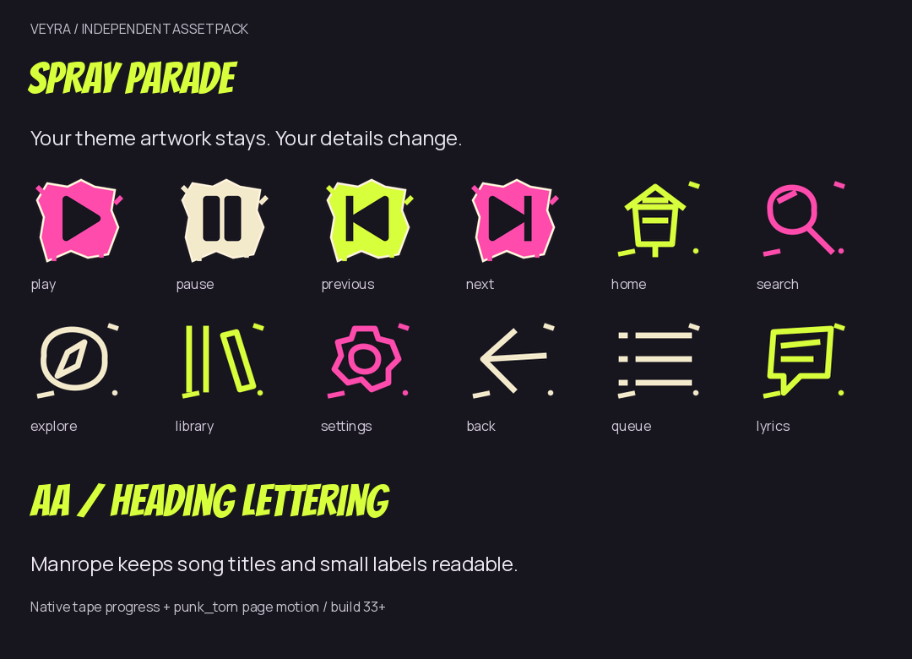
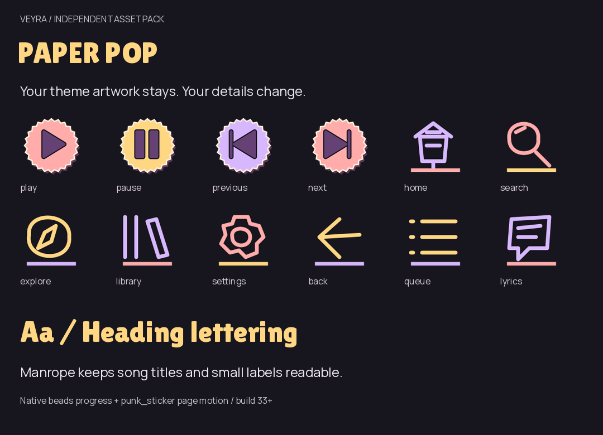
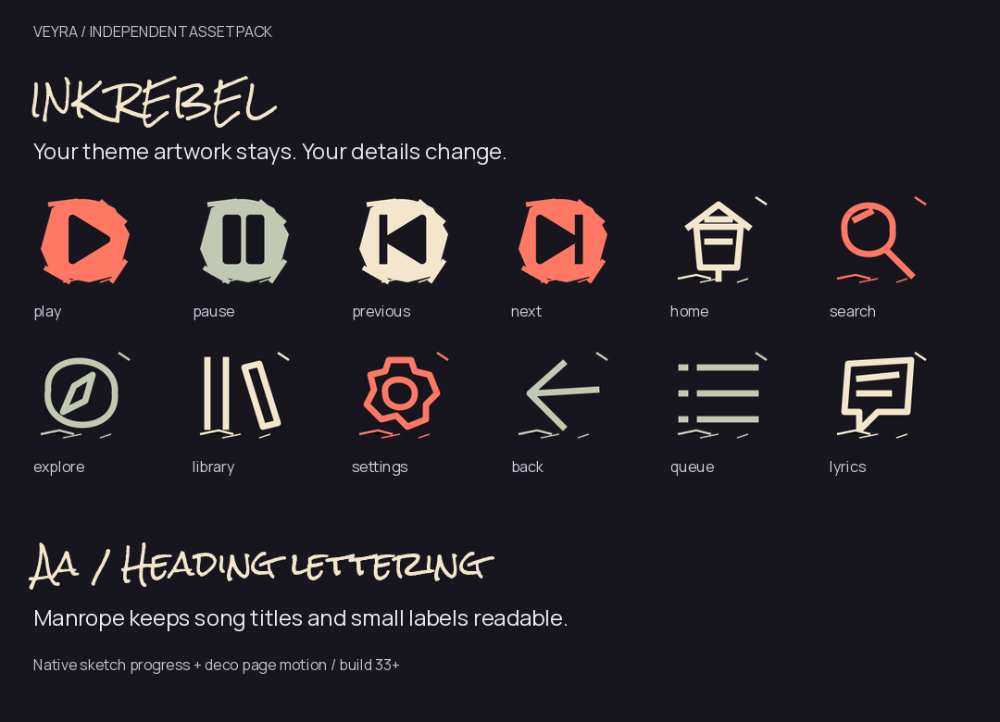
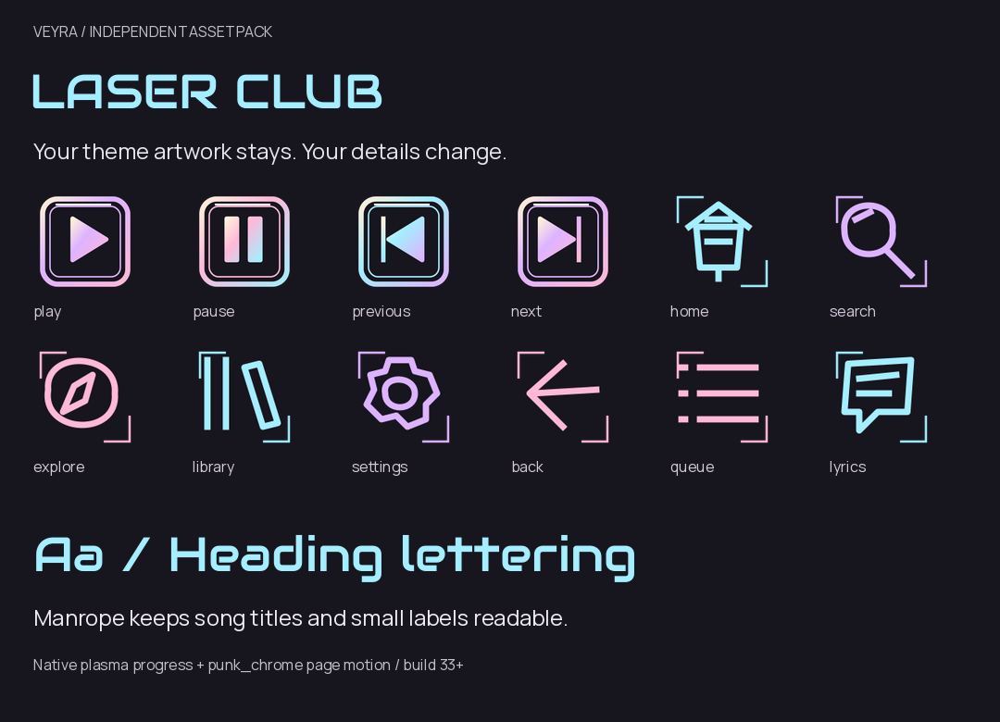
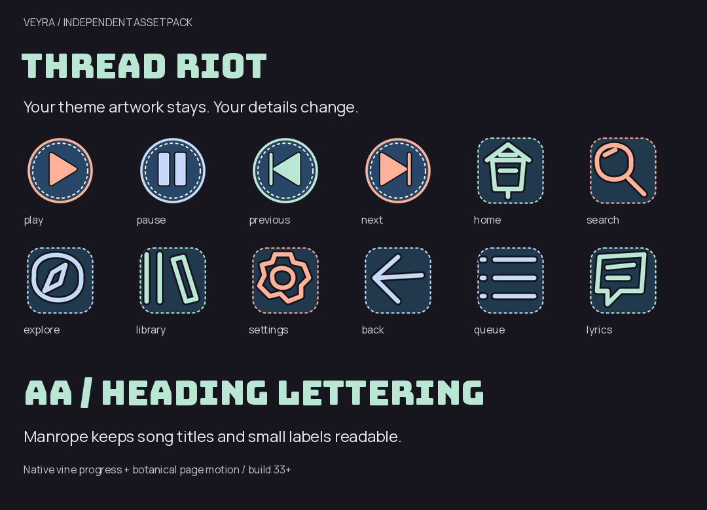

Independent overlays. Concept art is separate; these specimens use shipped PNGs and real fonts.
Graffiti marker glyphs, paint-stamp transports, torn frames and a short paper slide.

Scalloped cut-paper controls, offset collage shadows, playful rounded lettering and a buoyant reveal.

Dry-brush ink symbols, washi stamp frames, handwritten display lettering and a quiet depth reveal.

Beveled arcade keys, neon outline glyphs, futuristic display type and plasma-style progress.

Stitched patch glyphs, denim transports, varsity lettering, woven-line progress and a soft upward reveal.
